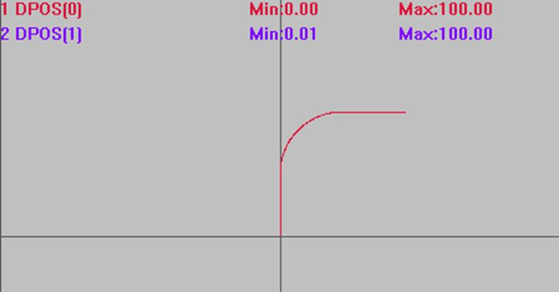

|
类型 |
多轴运动指令 |
|
描述 |
空间直线倒圆运动。
根据下一个直线运动的绝对坐标在拐角自动插入圆弧，加入圆弧后会使得运动的终点与直线的终点不一致，拐角过大时不会插入圆弧，当距离不够时会自动减小半径。 自定义速度的连续插补运动可以使用SP后缀的指令，见*SP描述。 此指令为早期开发指令，有轴数限制，建议使用CORNER_MODE 指令，功能更多。 |
|
语法 |
MOVESMOOTH (end1, end2, end3, next1, next2, next3, radius) end1：第1个轴运动绝对坐标 end2：第2个轴运动绝对坐标 end3：第3个轴运动绝对坐标 next1：第1个轴下一个直线运动绝对坐标 next2：第2个轴下一个直线运动绝对坐标 next3：第3个轴下一个直线运动绝对坐标 radius：插入圆弧的半径，当过大的时候自动缩小 |
|
适用控制器 |
通用 |
|
例子 |
BASE(0,1,2) ATYPE=1,1,1 '设为脉冲轴类型 UNITS=100,100,100 DPOS=0,0,0 SPEED=100,100,100 '主轴速度 ACCEL=1000 ,1000,1000 '主轴加速度 DECEL=1000 ,1000,1000 '主轴减速度 TRIGGER '自动触发示波器 MOVESMOOTH (0,100,0,100,100,0,50) '加入圆弧后，实际运动到了'(50,100,0) MOVEABS(100,100,0)
插补轨迹 DPOS(0)垂直刻度100 DPOS(1)垂直刻度100  |